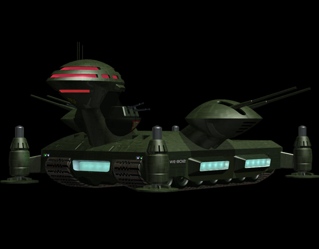

| Dobday Heavy Assault Zeon Duchy Land Battleship |
|
|  | |
General and Technical Data |
|
|
Unit Type: land battleship Operator: Zeon Duchy Hangar capacity: 4x infantry, 12x vehicles, 8x mobile suits Fixed armaments: 2 x 2-barrel main cannon turret; 2 x 2-barrel heavy machinegun turret x 2 Technical and Historical Notes In order to facilitate heavy fire support in the land theatre following Operation British, Zeon forces began designing a heavy weapons platform that would later evolve into the land battleship. The first Zeon design laid down was the Dobay. Initially intended to be a frontline command post, it quickly became well known as an excellent warship. Though it is propelled by old-fashioned tank treads (the Federation's Big Tray uses an air cushion), it is extremely heavily armored and sports some big guns. The Dobay's main armament is a pair of mobile suit-sized turrets situated on independant mounts behind the bridge. These can provide a large payload at long range. For point defense, a pair of large double-barreled machineguns are placed on either side of the bridge pylon. Large support legs at the ship's corners can deploy and give the Dobay a huge accuracy boost over long range, though it is completely immobile when they are used. The Dobay's hull is almost entirely hollow, barring the engine sections and other necessities. This allows it to carry numerous units inside of it. The smaller ones (usually Dopps and Magella Attack Tanks) can exit via the six hangar bays along the Dobay's sides. Its mobile suits, stacked like sardines on elevators, exit through a large hatch between the two main cannons. |
 RPG quick stats sheet
RPG quick stats sheet